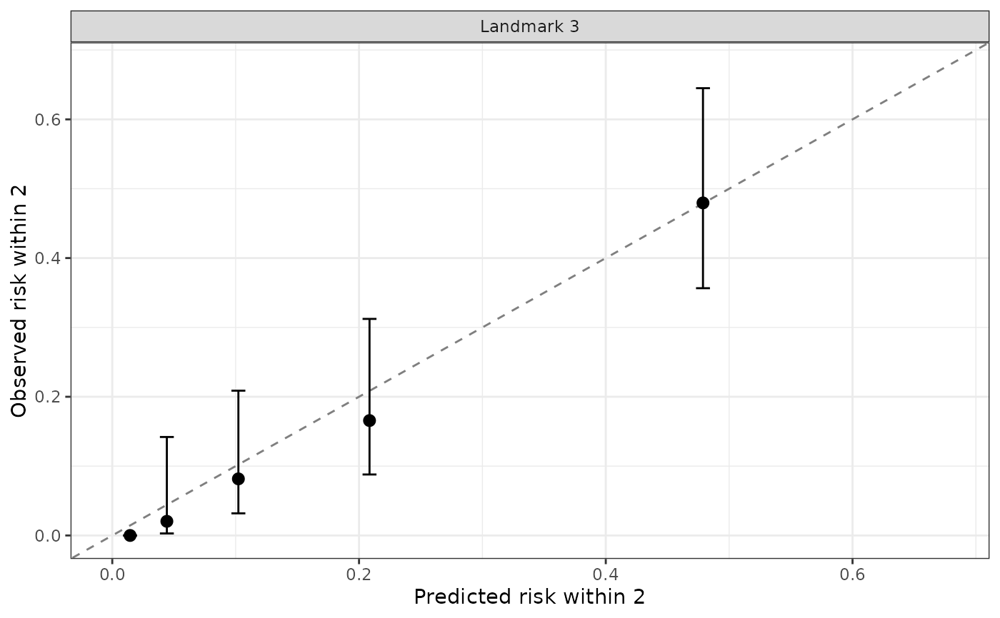

Checks whether the predicted risks are numerically right, not just well
ranked. At each landmark s in prediction_time, every subject
in data_predict_all still event-free at s gets a predicted
risk from predictRisk of an event in
(s, s + horizon], using only their longitudinal history up to
s. The subjects are split into n_groups groups of about
equal size by predicted risk, and for each group the mean predicted risk
(horizontal axis) is plotted against the observed risk (vertical axis):
one minus the Kaplan–Meier estimate at s + horizon or, with
competing risks, the Aalen–Johansen cumulative incidence of that event
type, both of which account for censoring, with 95\
intervals. Points on the diagonal mean the predictions are well
calibrated; points below it mean the model overestimates the risk, above
it that it underestimates it.
Evaluating on the data the sub-models were fit on gives an optimistic
(apparent) calibration; pass held-out validation data in
data_predict_all when available.
Usage
calibrationPlot(
data_predict_all,
long_fit_all,
survival_fit_all,
prediction_time,
horizon,
time_variable,
survival_variable_all,
survival_trans_function,
n_groups = 10,
bandcount1 = "auto",
bandcount2 = "auto"
)Arguments
- data_predict_all
The evaluation data, in the same format as for
predictRisk: a list of long-formatdata.frames, one per longitudinal outcome (or a singledata.frameused for all). Unlike forpredictRisk(), it must also contain each subject's observed outcome: the survival time and status variables ofsurvival_fit_all's Cox formula and, with competing risks, the event type variable of itsform_conditional_cr. The outcome is taken from the first data frame and is hidden frompredictRisk().- long_fit_all
A
longitudinalSub.BJMobject fromlongitudinalSub.- survival_fit_all
A
survivalSub.BJMobject fromsurvivalSub.- prediction_time
A vector of landmark times.
- horizon
The prediction horizon (a single positive number): the window after each landmark in which events are counted.
- time_variable
The name of the time variable in the linear mixed models.
- survival_variable_all, survival_trans_function
As for
predictRisk.- n_groups
Number of risk groups per landmark. Default
10(deciles); fewer groups give more stable observed risks in small data.- bandcount1, bandcount2
As for
predictRisk; passed to it at each landmark.
Value
A ggplot object with one panel per landmark (and, with
competing risks, per event type). Its data element is a
data.frame with one row per risk group, and columns
landmark, cause, group, predicted,
observed, lower, upper, n (subjects in the
group) and n_cases (events of that type observed in the window).
Examples
# \donttest{
data(pbc3)
survival_fit_all <- survivalSub(pbc3[!duplicated(pbc3$id), ],
Surv(years, status3) ~ age + sex, NULL)
long_sub_fixed <- list("long1" = serBilir ~ year + age + sex + years)
long_sub_random <- list("long1" = ~ year | id)
long_fit_all <- longitudinalSub(list(pbc3[pbc3$status3 == 1, ]),
long_sub_fixed, long_sub_random)
trans <- survivalTrans(c(1, 3, 5, 7))
# apparent calibration on the fitting data: 3-year landmark, 2-year window
calibrationPlot(pbc3, long_fit_all, survival_fit_all,
prediction_time = 3, horizon = 2, time_variable = "year",
trans$survival_variable_all, trans$survival_trans_function, n_groups = 5)

# }